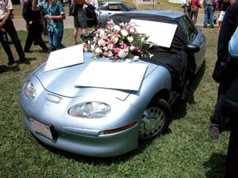
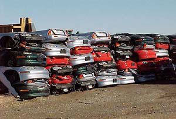

What if you could have a car with all the power and speed you’d expect, but that’s also clean, quiet and doesn’t need gas? Considering the price of gas these days and instability in the Middle East, who wouldn’t want to ditch a gas-guzzler in favor of a better alternative?
Those cars do exist, but according to a new documentary film, you won’t be driving one now or anytime soon. Who Killed the Electric Car? follows the recent history of the battery-electric car. In 1990, General Motors funded the EV1 prototype, a sporty car and an engineering marvel. Given this emerging technology, the California Air Resources Board (CARB) issued a mandate requiring an increasing percentage of new cars sold in the state to have zero tailpipe emissions.
At first, automakers such as Honda, Toyota, Ford and GM created electric vehicles to comply with the mandate. But then something odd happened - GM and others sued CARB to drop it, even as eager drivers joined long waiting lists to lease electric cars. With rising pressure from the automakers, the federal government and the oil industry, CARB eventually dropped the mandate.
How could this have happened? To answer this question, Who Killed the Electric Car? focuses mostly on the EV1 and its lessees. It’s a feel-good story up until GM’s puzzling recall - and subsequent destruction - of the EV1 fleet.
The film is packed with emotional testimonies from former EV1 lessees who fought and pleaded to keep their cars. Ironically, GM cited lack of consumer interest as its reason for the recall, which begs the question: Why didn’t GM promote the EV1 more? Aside from the 800 lessees, few people, especially outside of California, even knew the cars existed.
“I’ve never had a product I had to beg to lease, and then fight to keep,” says former EV1 driver Peter Horton. “I’ve never seen a company be so cannibalistic toward its own product.”
The lucky few who leased EV1s never wanted to give them up - the cars had great range (75 to 130 miles), cost just pennies a mile to operate, and required no gas, oil or mufflers, and almost no brake changes. Typical maintenance consisted only of recharging the battery at home, refilling the windshield wiper fluid and rotating the tires.
In classic “who-dunnit” style, writer/director Chris Paine also explores a number of compelling theories (some would say conspiracies) about the demise of electric cars in California. Did it happen because automakers and the auto parts industry stood to lose billions in revenue for parts and maintenance … because oil companies were concerned their monopoly on fuel was in jeopardy … because of ineffective leadership within CARB … because of industry-loyal politicians … or was the EV1 just a fad, with consumer acceptance limited to a small but vocal group of quixotic Californians? In the end, the blame is spread among all these groups.
But Who Killed The Electric Car? is not only about the electric car. The documentary is a statement about Americans’ transportation choices, and about how industries and governments manipulate them. And even though electric cars have been defeated (for now), the documentary ends positively. Mother Earth News readers already know there’s never been more hope for the future: Recent advancements in batteries, gasoline-electric hybrid vehicles and plug-in hybrids are driving significant change in our transportation options.
The movie is now available on DVD. For details, click here. To learn more about electric vehicles, read Drive an EV and Never Buy Gas Again and Why We Need Electric Cars.
Update: 7/20/06 - Director Chris Paine Tells Everyone Who Killed the Electric Car on Podcasting Debut!
LA-based director Chris Paine had his EV taken from him, as did many other folks who leased GM's ridiculously eco-friendly, forward-thinking electric car. He and his producer Dean Devlin decided the world needed to hear the whole account of Who Killed The Electric Car? in the their new documentary. Listen to this interview, go see the movie, and then decide for yourself...
|
 SONY PICTURES CLASSICS/MATT BOHLING Former lessees of GM’s EV1 held a mock funeral to mark the “passing” of their electric cars, all of which were rounded up and crushed by the automaker. |
 SONY PICTURES CLASSICS The documentary film Who Killed the Electric Car? explores a number of compelling theories about why GM crushed its fleet of EV1s. |
|